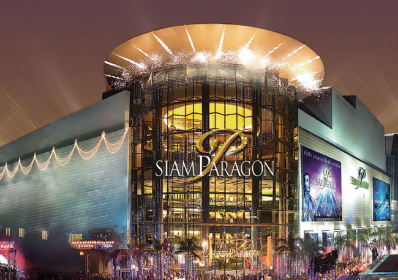
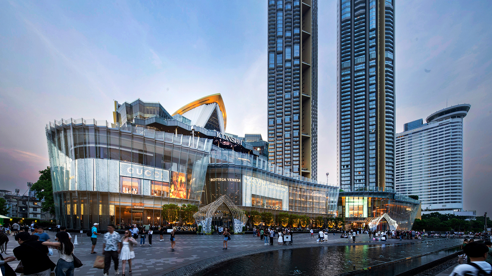
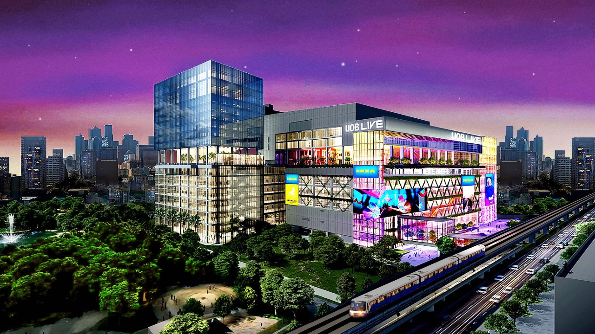
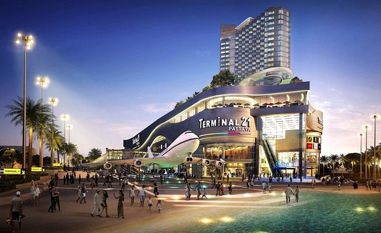

1. Siam Paragon
Siam Paragon is a luxury shopping mall in Bangkok known for its upscale retail stores, including brands like Chanel, Gucci, and Prada. It also features a wide variety of international and Thai dining options. Beyond shopping, it offers top-tier entertainment, such as SEA LIFE Bangkok Ocean World and the high-tech Paragon Cineplex. Located near BTS Siam (Exit 3), the mall showcases Bangkok's modern, cosmopolitan lifestyle.
2. ICONSIAM
ICONSIAM is a luxury shopping and cultural destination on Bangkok’s Chao Phraya River, developed by the creators of Siam Paragon. It features high-end brands, art galleries, and exhibition spaces, blending sophistication with Thai heritage. A key highlight is its indoor floating market, evoking traditional Thai charm with local snacks and crafts. The mall also houses Siam Takashiyama, a prestigious Japanese department store. Easily accessible via BTS Charoen Nakhon or shuttle boat, ICONSIAM merges luxury, culture, and innovation in a stunning riverside setting.
3. Central World
Central World is one of Bangkok’s largest shopping centers, featuring over 600 stores that range from local brands like Jaspal to international names such as Zara and Coach. It also offers diverse dining options, including Haidilao and Shake Shack. Beyond retail and food, it hosts the Trimurti Shrine, a spiritual site dedicated to the Hindu trinity, popular among those seeking blessings for love and prosperity. Conveniently located near BTS Chit Lom (Exit 6), Central World blends shopping, dining, and spiritual experiences in one vast complex.

4. Emsphere
Emsphere, launched on December 1, 2023, is Bangkok’s newest luxury lifestyle mall, known as a "Sleepless Gastronomic Destination." Open from 7 am to 3 am, it offers a rich mix of themed restaurants, cafes, and bars featuring both Asian and Western cuisines. Highlights include Tonchin Ramen, Shake Shack, and Gordon Ramsay Bread Street Kitchen. Conveniently located near BTS Phrom Phong (Exit 6), between Soi Sukhumvit 22 and 24, Emsphere is a must-visit for food lovers and shoppers alike.
5. Terminal 21
Terminal 21 Asok is a uniquely themed Bangkok shopping mall where each floor represents a different world city, such as Tokyo, London, and San Francisco. Designed like a 21st-century airport, it features detailed decor—even in restrooms. Shoppers can explore Thai designer fashion, and tourists can get a Privilege Card for discounts and treats. The mall also offers over 50 restaurants on its upper floors and is conveniently located at BTS Asok (Exit 3), making it a memorable global shopping and dining experience.
